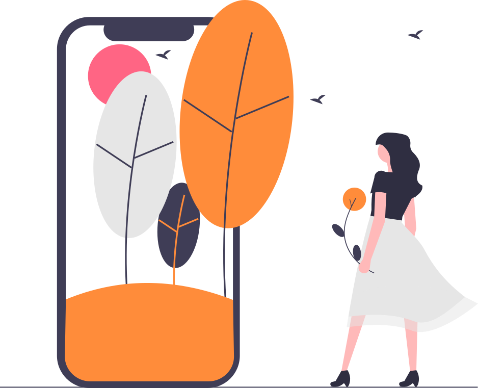

What happens when digital defense stops looking like a firewall and starts looking like biology?
This Is Speculation. That's the Point.
Let's be clear up front: this post is a thought experiment. Nothing here is a product announcement, a prediction, or advice. It's a "what if" prompted by two very real developments that landed this week, and what they might mean if we follow the thread forward.
On April 7, Anthropic unveiled Claude Mythos Preview, a model so capable at finding software vulnerabilities that the company chose not to release it publicly. In internal testing, Mythos identified thousands of zero-day vulnerabilities across every major operating system and browser, including a 27-year-old flaw in OpenBSD and exploitable chains in the Linux kernel. Anthropic responded by launching Project Glasswing, a defensive initiative partnering with Microsoft, Apple, CrowdStrike, the Linux Foundation, and others to patch the world's most critical software before attackers can catch up.
Days later, OpenAI released GPT-5.4-Cyber, a model purpose-built for defensive security work. It's "cyber-permissive," meaning it reduces refusal boundaries for vetted professionals and adds capabilities like binary reverse engineering. Access is gated through OpenAI's Trusted Access for Cyber program, with rollout limited to verified security teams.
These are real. What follows is not. But it's closer than you think.
Why Write This?
Cybersecurity has a vocabulary problem. We still talk about firewalls, perimeters, and patches, concepts forged in an era when threats moved slowly enough to name, catalog, and block one at a time. Those frameworks served us well. But the weight on them is increasing faster than they were built to hold.
In the span of a single week, two foundation model labs released AI systems that can find and exploit software vulnerabilities at a speed and scale no human team can match. That's not an incremental improvement. That's a phase change. And when the ground shifts that fast, the old maps stop being useful.
We're writing this to do three things:
- Stimulate new thinking around established concepts. Defense-in-depth, access control, availability; these ideas aren't wrong, but they may need new metaphors to stay relevant. If the old language can't describe the new reality, we need better language.
- Shed light on how fast things are moving. Most businesses aren't tracking model releases from Anthropic and OpenAI week to week. They should be, because decisions made in research labs today will shape the threat landscape they operate in tomorrow.
- Make science fiction feel like hypothetical science fact. The concepts in this post sound speculative. Living defense systems, autonomous threat response, biological network architecture. But every building block already exists in some form. The gap between imagination and implementation is shrinking, and it's shrinking fast.
This isn't a roadmap. It's a lens. Sometimes the most useful thing you can do is look at a familiar problem from an unfamiliar angle and see what comes into focus.
The Old Model: Walls, Gates, and Guards
Traditional cybersecurity is architectural. You build walls (firewalls), install gates (access controls), post guards (monitoring tools), and hope the blueprints hold. Defense-in-depth means layering these static structures so that breaching one doesn't compromise the whole.
It works. Until it doesn't.
The problem is that static defenses assume a relatively static threat. A known vulnerability gets a patch. A known attack pattern gets a signature. A known bad actor gets blocked. The entire model depends on knowing things in advance.
What Mythos and GPT-5.4-Cyber demonstrate is that AI can now find what nobody knew to look for, at a speed and scale no human team can match. That changes the equation. Not just for defenders; for attackers too.
The Biological Turn: What If Cyber Defense Were Alive?
Here's the thought experiment.
Imagine cybersecurity infrastructure that doesn't behave like architecture. It behaves like biology. Specifically, like an immune system.
In biological terms, your immune system doesn't work by building walls. It works by maintaining a population of diverse, adaptive agents that circulate continuously, recognize threats they've never seen before, and coordinate a response in real time. It learns. It remembers. It evolves. And critically, it operates without a central command telling it what to do at every step.
Now imagine network defense built on the same principles.

Living Defense Agents Instead of Static Rules
Instead of firewall rules and signature databases, picture autonomous AI agents, small, specialized models, circulating through your infrastructure the way white blood cells circulate through your body. They don't wait for instructions. They patrol. They probe. They test the integrity of systems they pass through.
Some are generalists (like innate immune cells) that flag anything anomalous. Others are specialists (like T-cells) trained on specific threat categories: privilege escalation, data exfiltration, supply chain compromise. When a generalist flags something, specialists are recruited to the site.
This isn't intrusion detection as we know it. It's intrusion perception. The difference is autonomy and adaptivity.
Dynamic Attackers Demand Dynamic Defenders
Here's why biology matters: if attackers also have access to AI models that can mutate their approach in real time (and they will), then static defenses become fundamentally inadequate. A firewall rule written yesterday can't stop an exploit generated today by a model that understands the defender's architecture.
Biological pathogens succeed precisely because they evolve faster than any single defense can adapt. The immune system's answer isn't to build a better wall. It's to field a population of defenders that can evolve just as fast.
In this hypothetical future, attack AI generates novel exploit chains the way a virus mutates. Defense AI responds the way an immune system does: recognition, escalation, targeted response, and memory for next time.

What This Means for Layered Defense
Traditional defense-in-depth stacks layers: perimeter, network, endpoint, application, data. Each layer is a checkpoint.
In the biological model, layers still exist, but they're not checkpoints. They're ecosystems. Each layer hosts its own population of defense agents adapted to that environment. Network-layer agents understand packet-level threats. Application-layer agents understand logic flaws and injection patterns. Data-layer agents understand access patterns and exfiltration signatures.
The layers communicate, just like your immune system's signaling molecules (cytokines) coordinate responses across tissues. An anomaly detected at the network layer triggers heightened alertness at the application and data layers. The system doesn't just defend in depth; it communicates in depth.
Health and Availability: Thinking in Uptime Biology
Here's where the metaphor gets interesting. Biological immune systems have a concept of "health" that's more nuanced than "up or down." Your body can be fighting off a minor infection while you go about your day. It can mount a massive inflammatory response when the threat is severe, trading short-term comfort for survival.
Translated to infrastructure: a living defense system might tolerate minor, contained anomalies rather than triggering a full lockdown that kills availability. It might throttle a service rather than shut it down. It might quarantine a compromised node while keeping the rest of the cluster healthy.
This is a fundamentally different philosophy from the "block everything suspicious" approach. It's risk-tolerant, proportional, and availability-aware. It prioritizes system health, not just system purity.
Of course, biology also gives us autoimmune disorders, where the immune system attacks the body itself. A living defense system that misidentifies legitimate traffic as a threat could cause outages as damaging as any attack. The tolerance problem cuts both ways.
Access Controls: Identity as Biology
In the current model, access control is binary. You have credentials or you don't. You're inside the perimeter or you're not.
In a biological model, identity is continuous and contextual. Your immune system doesn't check your ID at the door; it continuously verifies that every cell it encounters belongs there, behaves normally, and isn't compromised. A cell that starts behaving abnormally gets flagged regardless of its "credentials."
Imagine access controls that work the same way. Authentication isn't a one-time event. It's continuous behavioral verification. A user account that suddenly starts accessing databases it's never touched before, at 3 AM, from a new geography, doesn't just trigger an alert. The defense agents surrounding that account begin active investigation in real time, adjusting permissions dynamically based on observed behavior.
Zero trust, taken to its biological conclusion.
The Uncomfortable Implications
This thought experiment isn't all upside. A few things that should keep us honest:
Arms race acceleration. If defense becomes biological, attack becomes biological too. We're describing an ecosystem, and ecosystems produce predators alongside prey. The same AI that powers living defense can power living offense. Mythos found thousands of zero-days; the next Mythos-class model in the wrong hands finds thousands more.
Opacity. Biological systems are notoriously hard to understand from the outside. If your defense infrastructure is a living, adaptive system, can you explain why it made a specific decision? Compliance, audit, and legal liability all depend on explainability. An immune system doesn't write incident reports.
Control. The whole premise of a living defense system is autonomy. But autonomy and control are in tension. Who decides when the system is wrong? How do you override a defense agent that's incorrectly quarantining a production database? The more autonomous the system, the harder it is to intervene when it misfires.
Monoculture risk. If everyone's defense agents run on the same underlying models (say, Mythos or GPT-5.4-Cyber), then a vulnerability in the model itself becomes a vulnerability in every system it protects. Biology thrives on genetic diversity. A cybersecurity monoculture built on two or three foundation models is brittle in exactly the way biology warns against.
Where This Leaves Us
We're not here yet. Not close. But the building blocks landed this week.
Mythos showed that AI can find what humans can't, at scale. GPT-5.4-Cyber showed that AI can be tuned for defensive work and gated responsibly. Project Glasswing showed that the industry takes the dual-use problem seriously enough to coordinate.
The question isn't whether AI transforms cybersecurity. It already is. The question is whether that transformation looks more like better walls, or more like living systems. If it's the latter, we need to start thinking about immune design, not just security architecture.
And we need to think about it now, before the pathogens evolve first.
This post is a thought experiment, not a forecast. Upstate AI helps Central New York businesses navigate AI adoption with clarity and honesty. If you have questions about what these developments mean for your organization, reach out.